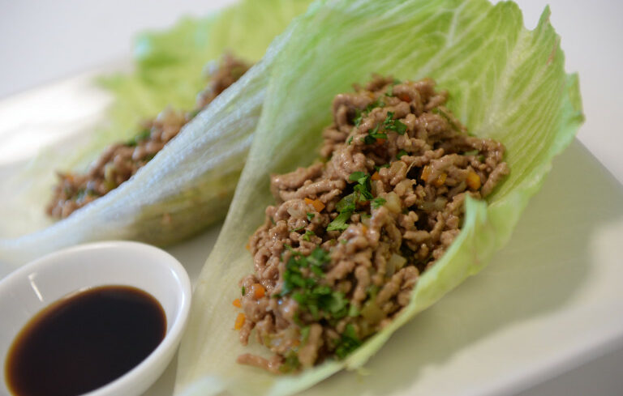

Yuk Sung

Description
Serves: 6
Time: 60 min
A classic Chinese dish, gloriously messy to eat, wonderfully tasty and low
in carbs! What more could you want?
Ingredients
- 1 iceberg lettuce
- 500 g ground chicken (or pork)
- 3 cm fresh ginger - peeled & sliced very finely
- 2 garlic cloves
- 2 spring onions
- 1 stalk celery
- 1 (220 g) can water chestnuts
- 1 tablespoon dark soy sauce
- 2 tablespoons oyster sauce
-
1 tablespoon dry sherry or sake (personal choice, I prefer the Sherry in
this dish)
- 1 teaspoon sugar
- 1 tablespoon sesame oil
- 1 tsp chilli flakes (optional to add a little extra spice)
Steps
- Slice the ginger (about 3 cm peeled and sliced very finely).
- Slice the garlic very finely.
- Chop the spring onions.
- Dice the celery into very small cubes.
- Chop the water chestnuts, again into very small cubes (5 mm).
- Put the above ingredients to one side.
-
Wash the lettuce, dry, and being careful not to tear the leaves,
separate leaves keeping them whole.
- Pat dry and put to one side.
-
In a small bowl mix together the soy sauce, oyster sauce, dry sherry and
sugar. Do not leave out the sugar as it just won't be the same!
-
Heat the sesame oil in a non-stick frying pan on high heat. Add the
garlic, ginger, and spring onions and fry until the garlic and ginger
are aromatic.
-
Add the minced pork and cook until the pork is browned. Remove from the
pan and set aside.
-
Add the water chestnuts, and celery to the frying pan and cook over a
medium heat.
-
Then put the sauce mixture in the pan and stir. Add the chilli flakes at
this point if you are using them.
-
Then put the pork back in the pan and continue to cook at medium heat
until sauce is reduced and mixture becomes dryer and the pork is
browned.
-
To serve; lay out a lettuce leaf and spoon a great big heap of the
cooked mixture into the middle and fold into a wrap and eat immediately.